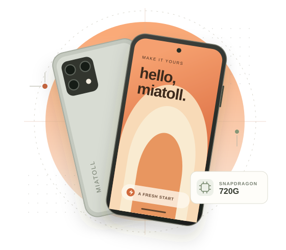

Privacy first01 /
VoltageOS
AOSP-based. Privacy-focused. Yours to explore.
- Sandboxed Google Play support
- Privacy-focused features
- Regular OTA updates
- Vanilla & GApps options
Recommended for privacy-conscious users
A little guidance. A lot of possibilities. Step-by-step instructions to bring a new ROM to your Miatoll device.

Pick your ROM. We’ll walk you through the rest.
AOSP-based. Privacy-focused. Yours to explore.
Your ROM of choice. One universal flashing guide.
Snapdragon 720G
curtana
joyeuse
excalibur
curtana
gram
Take a moment now. Thank yourself later.
Flashing custom ROMs carries risks. Always backup your data, ensure your device is charged, and follow instructions carefully. The developers are not responsible for any damage to your device. Proceed at your own risk.
If you were using any ROM lower than Android 15, or any port ROM — you must format data in recovery after the 1st boot to avoid storage-related bugs. This is critical when coming from older Android versions or ported ROMs.
Quick tips to get off to a good start.
Terminology and troubleshooting, without the guesswork.
A clean flash wipes all data before installing the ROM and is recommended for major updates. A dirty flash installs a new version over the old one, keeping user data. Always read ROM-specific instructions if provided, and back up before either method.
GApps is a Google Apps package for ROMs without built-in Google services. The guides cover vanilla ROMs, normal GApps, and VoltageOS with Sandboxed Google Play.
Perform a data format in recovery after first boot when coming from a ROM below Android 15 or a port ROM. Formatting erases your data, so back up first.
For Sandboxed Google Play, give Google Play Services the Contacts permission, then reboot. See the VoltageOS sandbox guide for the full setup and support links.